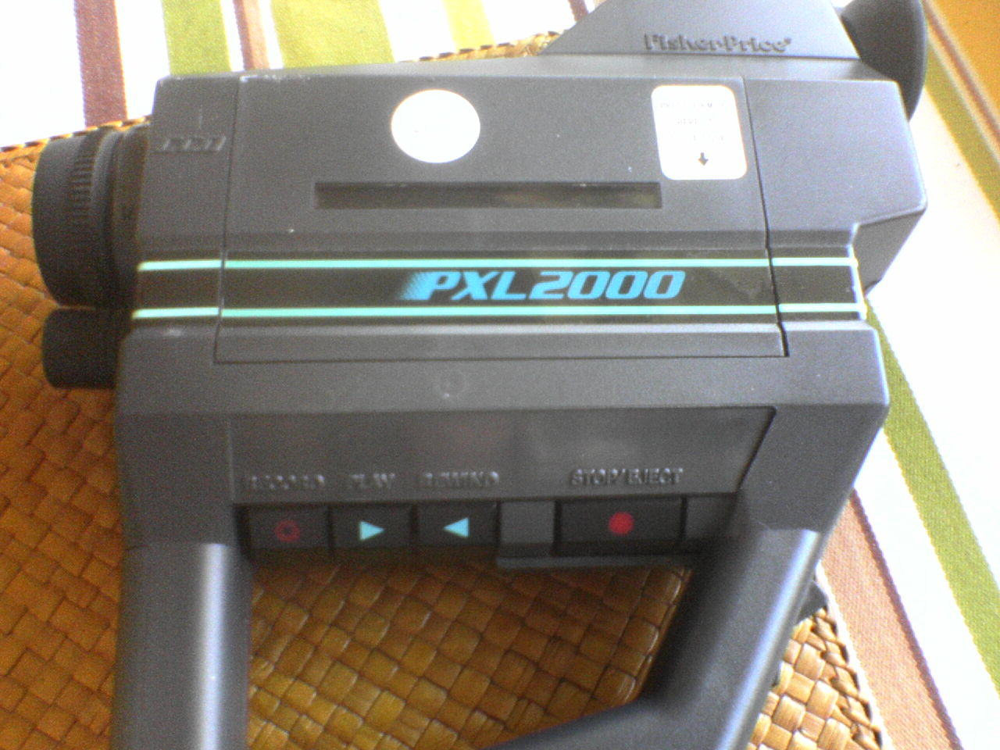
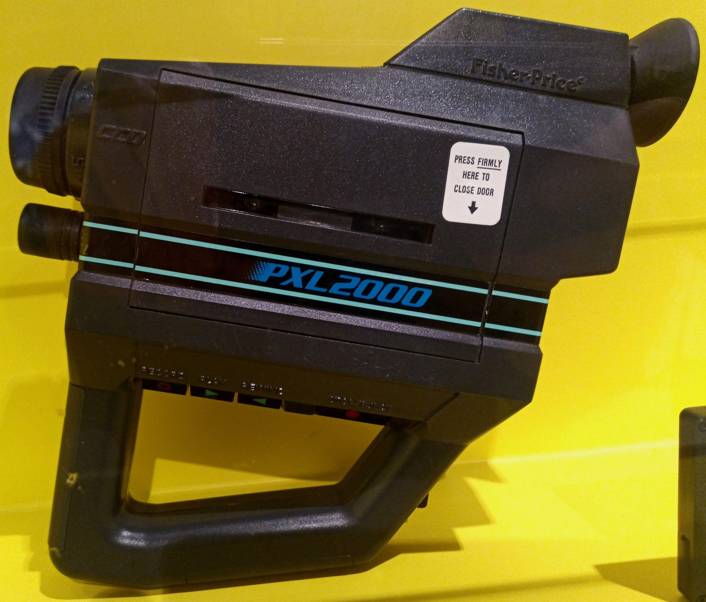
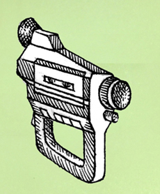
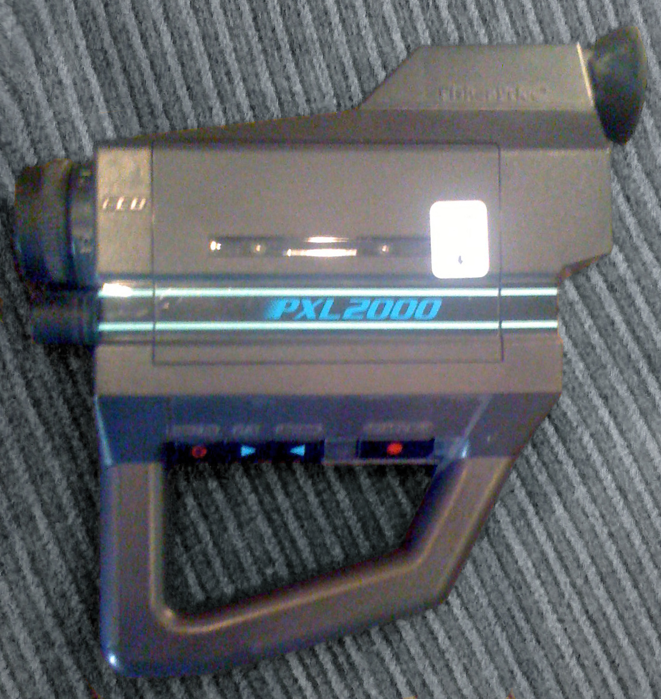

Fisher-Price PXL2000 / Pixelvision
A toy video camera that stored eleven minutes of black-and-white video on a plain audio cassette

Overview
The PXL2000, marketed as Pixelvision, was a toy black-and-white video camera introduced by Fisher-Price at the 1987 International Toy Fair. It recorded both images and sound onto ordinary Compact Cassette tapes, and after roughly one year and about 400,000 units it was pulled from the market. It is the strangest possible answer to the question 'what is a video recorder made of?' — no camcorder tape format, no proprietary cartridge, just a standard audio cassette pushed to nine times its normal speed.
The tape is the whole point of the interaction. The machine runs the cassette at roughly 16.875 inches per second instead of the usual 1.875, fitting eleven minutes of video onto a C90. Video is recorded as a frequency-modulated signal on the left audio channel; the audio commentary lives on the right. A 120x90 CCD is scanned fifteen times per second through a custom Sanyo ASIC (the LA 7306M) and written to the tape, and for viewing the camera outputs through an RF modulator to a television on channel 3 or 4. Inventor James Wickstead sold the rights to Fisher-Price in 1987; US Patent 4,875,107 documents storing video signals on an audio cassette.
After it flopped as a toy, the PXL2000 was rediscovered in the 1990s by low-budget filmmakers who loved its grainy, shimmering monochrome. Sadie Benning made acclaimed video diaries with one as a teenager, Peggy Ahwesh shot Strange Weather entirely on it, Richard Linklater used it in Slacker, and in 1990 Gerry Fialka founded PXL THIS, a film festival devoted entirely to the camera that still runs today. A unit is preserved in the Science Museum Group's collection.
Deep dive
The PXL2000 stores eleven minutes of moving image on a C90 audio cassette by running the tape at about nine times normal speed. Because video needs far more bandwidth than audio, the machine sacrifices resolution to fit: a 120x90 CCD scanned 15 times per second, encoded as FM and written to the left channel, with the sound on the right. The same cassette your family used for mixtapes became a video format — capture, storage, and playback all keyed to the most ubiquitous magnetic medium in the house.
The PXL2000 is a rare case where a product's failure became its interface identity. Its low resolution, soft focus, and image shimmer became an aesthetic. Gerry Fialka founded the PXL THIS festival in 1990; Sadie Benning's teenaged video diaries, Peggy Ahwesh's Strange Weather (1993), and sequences in Richard Linklater's Slacker (1990) and Michael Almereyda's Nadja (1994) all treat the toy's limitations as a way of seeing. Artists wrote about the camera's mortality — each use brings the format closer to extinction — and in 2021 the University of California, Santa Barbara began processing Fialka's PXL THIS archive for preservation.
Introduced at about $179 and later sold as model #3300 at $100 (camera only) and #3305 at $150 (adding a 4.5-inch portable black-and-white TV monitor), the PXL2000 was too expensive for a child's toy and too crude for a serious camcorder. It survived about one year and roughly 400,000 units. Variants appeared under the Fisher-Price PixelVision name and as the Sanwa Sanpix1000, KiddieCorder, and Georgia. A textbook case of ambition outrunning its market.
Team & pioneers
- James Wickstead. Inventor; sold the PXL2000 rights to Fisher-Price at the 1987 American International Toy Fair.
- Fisher-Price. Toy manufacturer that released and then pulled the PXL2000.
- Gerry Fialka. Founded the PXL THIS festival in 1990; his archive is held at UC Santa Barbara.
- Sadie Benning. Video artist who made acclaimed PXL2000 diaries as a teenager.
Media



Sources
- Wikipedia — PXL2000
- New York Times — As Simple as Black and White (Revkin, Jan 22 2000)
- US Patent 4875107 — Apparatus for storing video signals on audio cassette
- IndieWire — Pixelvision: How a Failed '80s Fisher-Price Toy Camera Became One of Auteurs' Favorite '90s Tools
- UCSB Library — Gerry Fialka PXL THIS Archive (PA Mss 231)